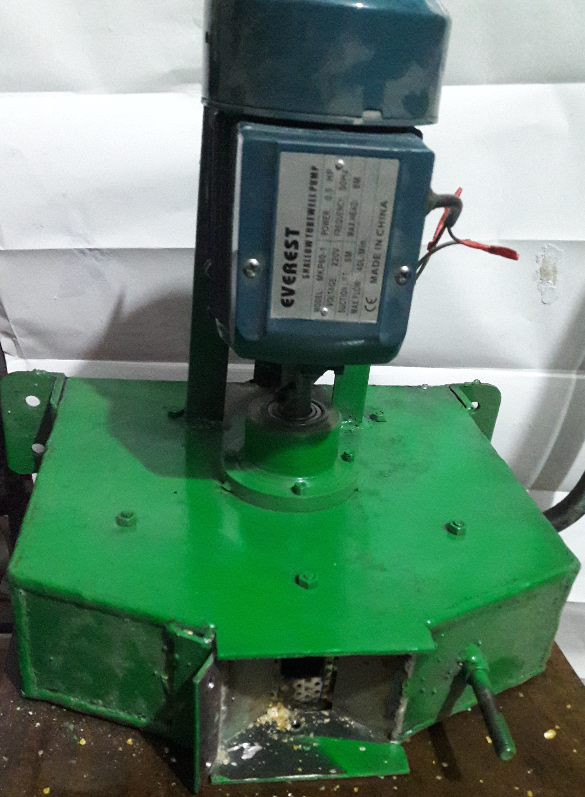
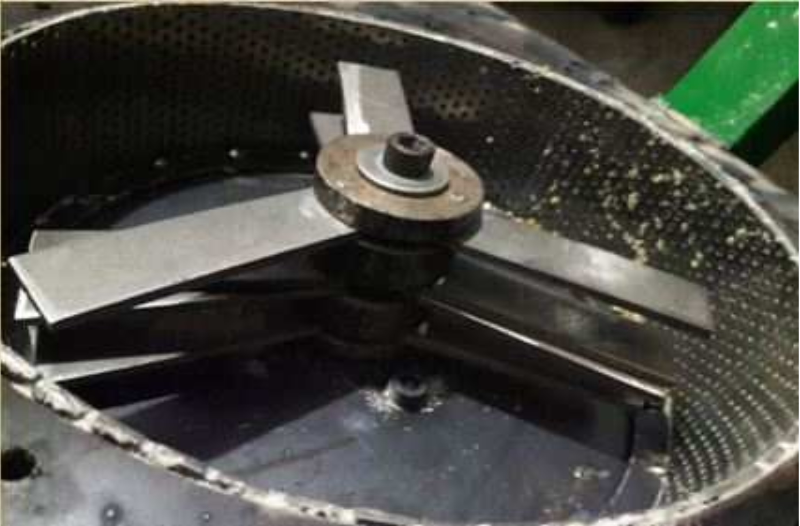
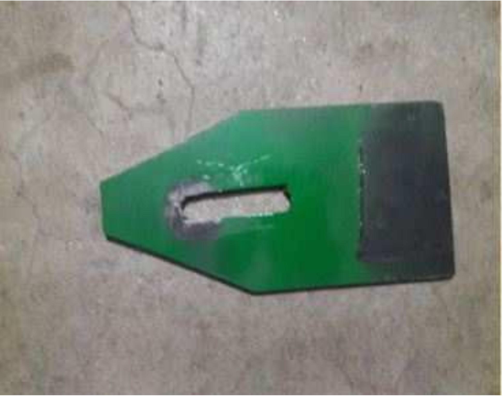
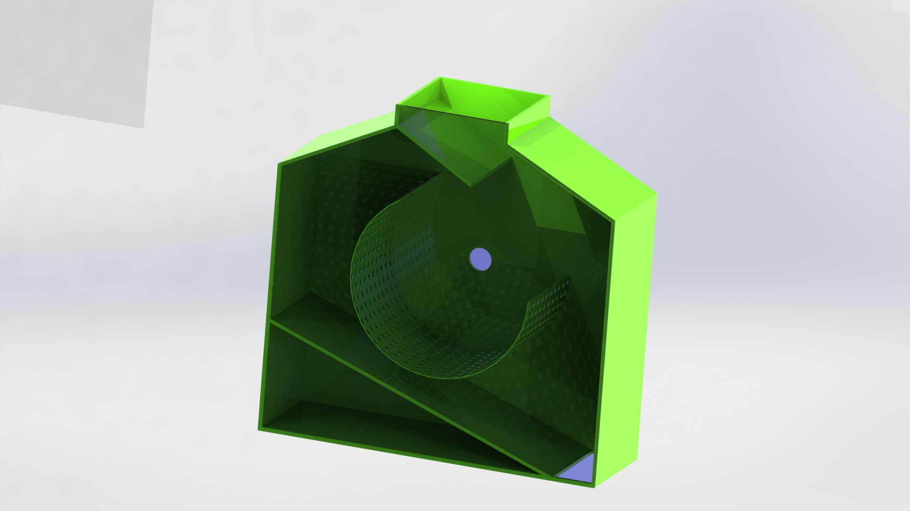
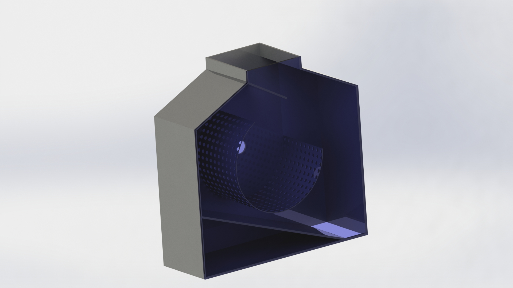

Hammer Mill Corn Grinder
Design & Fabrication
Undergraduate Thesis | BUET | Bachelor of Science in Mechanical Engineering
🏛️ Institution: Bangladesh University of Engineering & Technology (BUET)
👤 Author: Azmal Huda Chowdhury (with Anik Das)
👨🏫 Supervisor: Prof. Dr. Abdus Salam Akanda
📅 Date: February 27, 2016
💰 Total Cost: ~10,800 BDT (~$140 USD at the time)



Project Overview
This thesis presents the design, fabrication, and testing of a hammer mill corn grinder using locally available materials in Bangladesh. The machine was developed to address the needs of rural farmers who rely on inefficient, laborious traditional methods for grain processing. The hammer mill uses rotating hammers at high speed (2800 RPM) to crush dry corn into fine particles suitable for corn flake production. The machine features a detachable screen with 3mm apertures, allowing for different output sizes by simply changing the screen.
Project Motivation
Bangladesh is an agricultural country producing various grains annually. However, farmers still rely on inefficient, laborious methods, leading to storage losses and poverty. This project aimed to:
- Design a portable, power-operated hammer mill from locally available materials
- Produce suitable grain sizes for corn flake production
- Reduce rural-urban migration by creating value-added agricultural processing
- Provide farmers with an affordable alternative to expensive imported mills
My Role & Contributions
- Design: Contributed to the mechanical design of the crushing chamber, rotor, and hammer configuration
- Calculations: Performed engineering calculations for shaft diameter, power requirements, and hammer forces
- Fabrication: Participated in welding, assembly, and machining of components (bearing housing on lathe)
- Testing: Conducted performance testing with 1kg corn samples to determine crushing efficiency
- Documentation: Co-authored the thesis document and prepared technical drawings
Key Design Features
Design Considerations:
- Locally available materials: All components sourced from local market (total cost ~10,800 BDT)
- Flexible construction: Bolted joints allow easy disassembly for maintenance
- Replaceable screen: Different mesh sizes can be used for different output fineness
- Swinging hammers: Loosely fitted to absorb shock loads from hard materials
- Safety: Closed system prevents dust hazards and contains explosions
- Versatility: Can grind wheat and other cereal grains besides corn
Design Solutions to Conventional Hammer Mill Problems:
| Problem in Conventional Mills | Solution in Our Design |
|---|---|
| Sieve holes enlarge/burst due to wear | Endless sieve concept (dimensionally controlled "open gate") |
| Sieve holes clog, reducing efficiency | Eliminating sieve screens solves clogging |
| Wet materials absorb impact energy | Fan-induced forced convection for drying (proposed) |
| Dust particles cause health hazards | Closed system with sedimentation chamber |
Components of the Hammer Mill
Component List:
- Motor: 0.5 HP, 2800 RPM single-phase electric motor
- Body (Crushing Chamber): 3mm thick flat steel plates, arc-welded, bolted cover with gasket
- Hopper: Pyramidal shape from 1.5mm sheet, bolted to chamber, with feed rate control slider
- Screen: Food-grade stainless steel plate with 3mm uniformly drilled holes (replaceable)
- Rotor/Shaft: Horizontal shaft with swinging hammers
- Hammers: 12 pieces, loosely fitted for free swing, made of wear-resistant food-grade material
- Bearings & Housing: 2 bearings with stainless steel housings (interference fit, machined on lathe)
- Motor Stand: Fabricated steel stand



Working Principle
The hammer mill operates on the principle of impact and pulverization:
- Feeding: Dry corn is fed through the hopper. A mechanical slider controls the feed rate.
- Crushing: Material enters the crushing chamber where 12 hammers rotate at 2800 RPM. The hammers strike the grain, throwing it against the chamber walls. The high centrifugal force (from 2800 RPM) pulverizes the material.
- Discharge: Once particles reach the desired size (<3mm), they pass through the perforated screen and are collected.
Operating Principle Factors:
- Higher RPM = finer output (2800 RPM selected for corn flake production)
- Larger screen holes = coarser output (3mm selected for desired grain size)
- More hammers = finer output (12 hammers used)
- Moisture content significantly affects output (1% moisture increase = 10% output decrease)
Engineering Calculations
Centrifugal Force on Hammer:
Fₕ = Nₕ × mₕ × rₕ × ωₕ²
Power Required:
Pₕ = T × ω
Shaft Design (Soderberg Criterion):
σ_y/FS = (32/(π×d_sh³)) × √[(K_f×σ_u×M/σ_e)² + T_m²]
Testing & Results
Test Procedure:
- 1kg dry corn weighed using electronic balance
- Corn fed into machine
- Time to grind recorded
- Output grinded corn weighed
- Process repeated 3 times for accuracy
Results:
| Trial | Input (kg) | Output (gm) | Time (min) | Losses (%) |
|---|---|---|---|---|
| 1 | 1 | 980 | 5 | 2 |
| 2 | 1 | 985 | 6 | 1.5 |
| 3 | 1 | 985 | 6 | 1.5 |
| Average | 1 | 983 | 5.67 | 1.67 |
Performance Metrics:
- Crushing Efficiency: 98.33% (Mass output / Mass input × 100%)
- Crushing Capacity: ~10 kg/hour
- Losses: 1.67% (due to entrapment inside crushing chamber and screen)

Cost Analysis (2016, BDT)
| Component | Quantity | Price (BDT) |
|---|---|---|
| 3mm Steel Plate | 15 sq ft | 1,200 |
| Stainless Steel Screen | 1 piece | 1,000 |
| 0.5 HP Motor | 1 piece | 1,800 |
| Bearing Housing | 2 pieces | 2,000 |
| Bearings | 2 pieces | 250 |
| Bolts | 28 pieces | 350 |
| Shaft | 1 piece | 1,500 |
| Socket | 1 piece | 500 |
| Blades (Hammers) | 12 pieces | 800 |
| Blade Shaft | 1 piece | 600 |
| Motor Stand | 1 setup | 400 |
| Paint/Finish | Full body | 400 |
| Total | 10,800 BDT (~$140 USD) |
Advantages & Disadvantages
Advantages:
- ✅ Produces fine particles suitable for corn flake production
- ✅ Operates on household electricity (220V)
- ✅ Simple to install and operate
- ✅ Replaceable screen for different output sizes
- ✅ Easily disassembled for maintenance (bolted construction)
- ✅ Closed system - safe from dust hazards and explosions
- ✅ All parts locally available - can be fabricated anywhere in Bangladesh
- ✅ 98.33% crushing efficiency - better than manual stone crushers
- ✅ Versatile - can grind wheat and other cereal grains
Disadvantages:
- ❌ Moisture content significantly reduces crushing efficiency
- ❌ Screen holes can clog over time with extended use
- ❌ Cannot grind wet corn effectively
Skills & Technologies Used
Downloads
Recommendations for Future Work
- Upgrade to 1 HP motor for higher productivity
- Add belt and pulley assembly for smoother power transmission
- Use flanged motor for direct mounting to crushing chamber
- Develop inertia base to absorb vibration
- Add preheating system to remove moisture from wet corn
- Incorporate pneumatic suction device in output section
- Add feed control system with two screens for coarse/fine separation
Connection to My Current Research
This undergraduate thesis laid the foundation for my engineering approach:
- Design methodology: Problem identification → design solutions → fabrication → testing
- Hands-on fabrication: Welding, machining, assembly skills used in later projects
- Local materials approach: Cost-effective fabrication using available components
- Performance quantification: Efficiency calculations and testing protocols
- Technical documentation: Thesis writing and drawing preparation
Conclusion
This thesis successfully developed a small-scale hammer mill corn grinder for domestic and small-farm use in Bangladesh. The machine was designed and fabricated using locally available materials at a total cost of 10,800 BDT (~$140 USD). Key specifications include a 0.5 HP motor at 2800 RPM, 12 swinging hammers, and a replaceable 3mm screen. Testing showed excellent performance: 98.33% crushing efficiency with only 1.67% losses, and a production capacity of ~10 kg/hour. The machine operates on household electricity, is simple to maintain, and can be disassembled for cleaning. Beyond corn, it can grind wheat and other cereal grains, making it a versatile tool for rural farmers. This project successfully demonstrated that locally fabricated agricultural processing equipment can be both affordable and efficient, potentially reducing rural poverty and rural-urban migration by enabling value-added grain processing at the source.